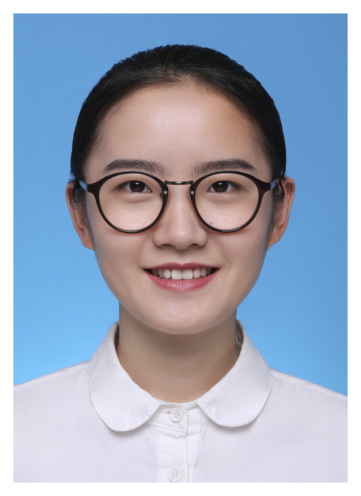

|
 |
Jiaqing Zhang (张佳青) |
News
- [2021.05] One paper is accepted by NN (link)!
Research Interest
My research interests lie in remote sensing information processing, computer vision, and machine learning. Currently, my research topics include:
- Remote Sensing Information Processing (遥感信息处理): Hyperspectral/Multimodal Remote Sensing
- Computer Vision (计算机视觉): Object Detection/Fusion/Super-Resolution/Transformer
Education
- 2022.03-Now Ph.D. in School of Telecommunications Engineering, Xidian University
- 2019.09-2022.03 M.E. in School of Telecommunications Engineering, Xidian University
- 2015.09-2019.06 B.E. in Faculty of Electrical Engineering and Computer Science, Ningbo University
Publications
Object Detection in Remote Sensing:
[1] W. Xie J. Zhang* , J. Lei*, et al. Self-spectral learning with GAN based spectral-spatial target detection for hyperspectral image. Neural Networks (NN), vol. 142, pp. 375-387, 2021.
[1] Zhang J. *, J. Lei*, et al. SuperYOLO: Super Resolution Assisted Object Detection in Multimodal Remote Sensing Imagery. arXiv preprint, arXiv:2209.13351, 2022.
[Link]
[PDF]
[Code]
[BibTeX]
[Link]
[PDF]
[Code]
[BibTeX]
Awards